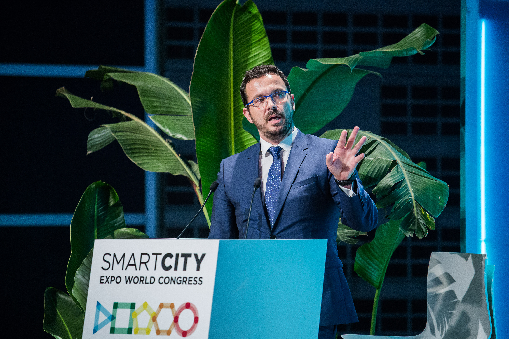

When Technology meets Purpose
Inframind Ltd — Cyprus · Technology Facilitators
From the first technical study to the moment a system becomes part of daily life — designing and delivering infrastructure that thousands of citizens rely on, every single day.
About
Infrastructure that works does not announce itself. It performs — quietly, reliably, day after day. Over time it becomes habit. That is when it has succeeded.
Inframind is the practice through which I design, develop and deliver technology projects for public authorities and transit operators in Cyprus and across Europe — projects with real operational outcomes, not for appearances. Every system must be capable of becoming part of everyday use.
Inframind covers the full project lifecycle — from technical study and functional specifications, through procurement support and system design, to on-site supervision, coordination and go-live. The work does not stop until the system is real, operational, and used by citizens as part of their everyday life.
What matters is not delivery on paper, but benefit in practice — measurable value for the people who use the system and the organisations that operate it. Every technology choice is deliberate, made only when it offers clear, lasting advantage. Anything that does not eventually become habit, has not yet succeeded.
"Technology, when designed correctly, does not shout. It silently supports daily life, highlights space, reduces tension, and returns value to society."

Ioannis Chr. Panagiotidis
ICT & ITS Consultant and Technology Facilitator — proven in practice, not by claim. Every system he has designed has been implemented in full and is in active daily use, serving thousands of citizens and users. Deep expertise in intelligent transport systems, smart mobility, and public sector digital infrastructure.
A consistent participant in leading international forums including the ITS World Congress and Smart City Expo World Congress — not for presence, but to remain at the frontier of what actually works.
Every project must combine functionality with aesthetics. The goal is always to reduce the stress of everyday life — in mobility, access, service delivery, and public space.
Results speak louder than presence.
Services
Technical expertise and institutional knowledge across the full project lifecycle — from the first study to the moment a system enters daily citizen use and delivers real benefit.
01
Design and implementation of ITS infrastructure — from telematics and real-time data systems to national mobility platforms.
02
End-to-end smart parking systems, interoperability frameworks, and urban mobility solutions with measurable citizen benefit.
03
ABT, fintech integration in transport, and open loop payment orchestration for public transit networks.
04
Detailed technical studies, functional specifications, and procurement support for complex public sector technology projects.
05
Functional and operational design of bus stop information systems, municipal digital platforms, and citizen-facing services.
06
Systems integration, data interoperability between public transport operators, and national platform connectivity. A defining recent achievement: two separate mobility services connected through their respective digital wallets — a cross-system bridge between a municipal parking application and the national public-transit wallet.
Major Projects
Every project here started from a blank page — a technical study, a set of requirements, a vision that had to become reality. From the first step, I was there: designing the architecture, writing the specifications, coordinating the implementation, overseeing delivery all the way to go-live. A project is successfully implemented when it is in real, daily use — not when it is delivered on paper, but when thousands of people rely on it every single day, as part of their ordinary life. That is the measure. That is the point.
In operation since 2018 · Multi-operator · Open data pioneer
An integrated intelligent transport platform unifying real-time data, fleet operations, and passenger information across operators. In active daily operation since 2018, underpinning the transit infrastructure that thousands of citizens rely on every day. Among the first national-scale deployments to publish open data — an ongoing contribution to the broader mobility ecosystem.
Park & Ride integrated · Cross-system wallet bridge · Any-app payment · Lighting & safety by design
From feasibility study to sensor integration, payment systems, lighting design, and live deployment — designed and implemented end-to-end. The system extends from real-time availability to Park & Ride integration with public transport, allowing seamless use through whichever app the citizen already has. Crucially, this project carries the cross-system wallet bridge with the national transit wallet — explored in more depth further down the page. Lighting and spatial design were treated as part of the system, not added afterwards — creating safe, legible, calm spaces that thousands of citizens use every day as a natural part of their routine.
464 upgraded digital displays · 95 routes · 7 operators
A national passenger information network covering all of Cyprus — over 5,000 bus stops across every city and transit corridor. Conceived, specified, and implemented from scratch. Real-time displays and data infrastructure now embedded in the daily journeys of thousands of citizens and visitors — used without thinking, exactly as intended.
Open loop EMV · Integrated with Motion ITS · Inclusive by design
Account-based ticketing and open loop EMV infrastructure — from functional specification through fintech integration to live deployment within the Motion ITS platform. The system was designed to be inclusive: digital natives use the app, less tech-comfortable or older citizens complete the same transaction at convenient physical points they already visit — kiosks, hotels, cafés — without queuing at a government office. The technology adapts to the citizen, not the other way around.
Open data · Cyprus mobility
MOTION ITS operates continuously as Cyprus' central open-data infrastructure for public mobility — providing live information to every citizen, business, and application built on top of it.
Σήμερα η Κύπρος έχει προγραμματίσει — δρομολόγια · με στόλο έως — λεωφορεία · εξυπηρετώντας — στάσεις · μέσω — παρόχων σε όλη την επικράτεια — επίσημο πρόγραμμα όπως δημοσιεύεται καθημερινά στο GTFS static feed του MOTION ITS.
—
Τις τελευταίες 6 ώρες, η πλατφόρμα κατέγραψε — δρομολόγια · από — λεωφορεία · εξυπηρετώντας — στάσεις · μέσω — παρόχων σε όλη την Κύπρο — ζωντανά δεδομένα διαθέσιμα δημόσια ως open data, ώστε πολίτες, επιχειρήσεις και τρίτες εφαρμογές να αξιοποιούν αυτή την κρίσιμη ψηφιακή υποδομή.
—
Έως τώρα σήμερα, το δίκτυο πρόσφερε εκτιμώμενα — χλμ. · από — χλμ. προγραμματισμένα έως τώρα · βαθμός παροχής — % .
—
Technophilia in Practice · Interconnection for daily citizen use
Two separate mobility services, accessible through a single digital wallet — whichever one the citizen already has. The systems handle the bridge underneath; the citizen does nothing extra.
In the greater Limassol area, the Municipality of Amathounda's parking application — its own digital wallet — was bridged with the national public-transit wallet. The citizen uses each app naturally — and the bridge handles the connection underneath. No double registration. No double identity. No friction. I originated this idea; I supervised and coordinated the implementation across both projects. The technical bridge is in place and awaits commercial launch.
Any sufficiently connected service becomes invisible to the citizen.
“Any sufficiently advanced technology is indistinguishable from magic.” — Arthur C. Clarke, Clarke's Third Law, 1973
A category, not a one-off: interconnection & services for daily citizen use. This is the approach — new examples join this category as cities, operators, and public services come together.
We shape our tools, and thereafter our tools shape us.
Πρώτα διαμορφώνουμε τα εργαλεία μας — έπειτα εκείνα διαμορφώνουν εμάς.
Marshall McLuhan · Understanding Media · 1964
Philosophy
Technology is not an end in itself. It is a means to produce
better services, calmer experiences for citizens,
more functional cities and systems, and projects with
lasting social impact.
Every project must combine functionality with aesthetics.
The work must convey respect, education, harmony, and permanence.
Society must receive real value back — not digital facades.
Real technology does not demand attention. It becomes habit.
Contact